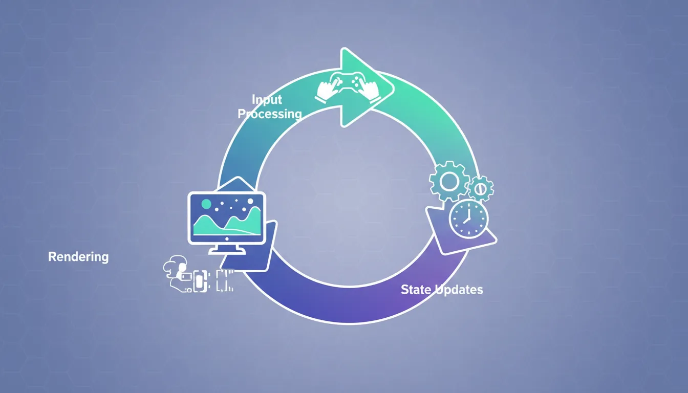
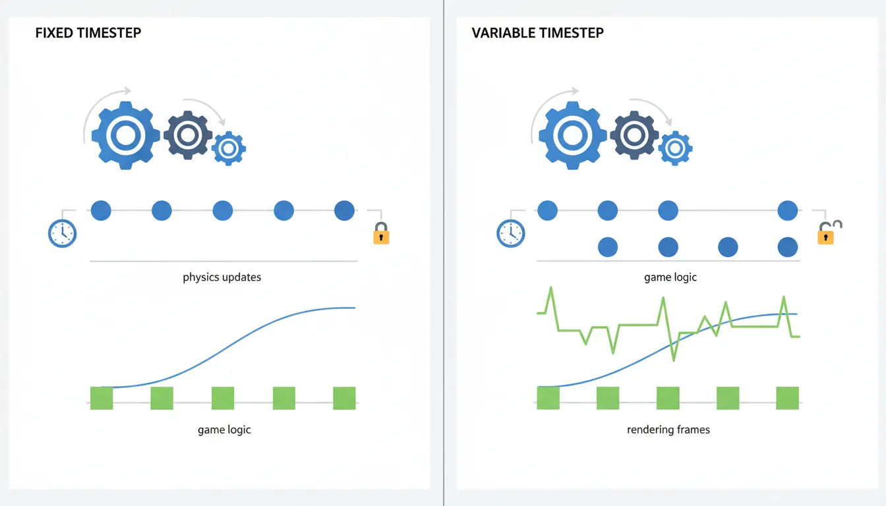
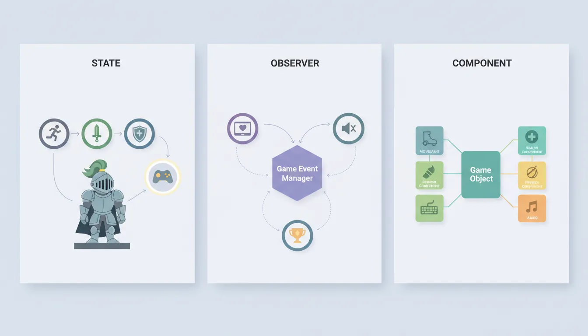
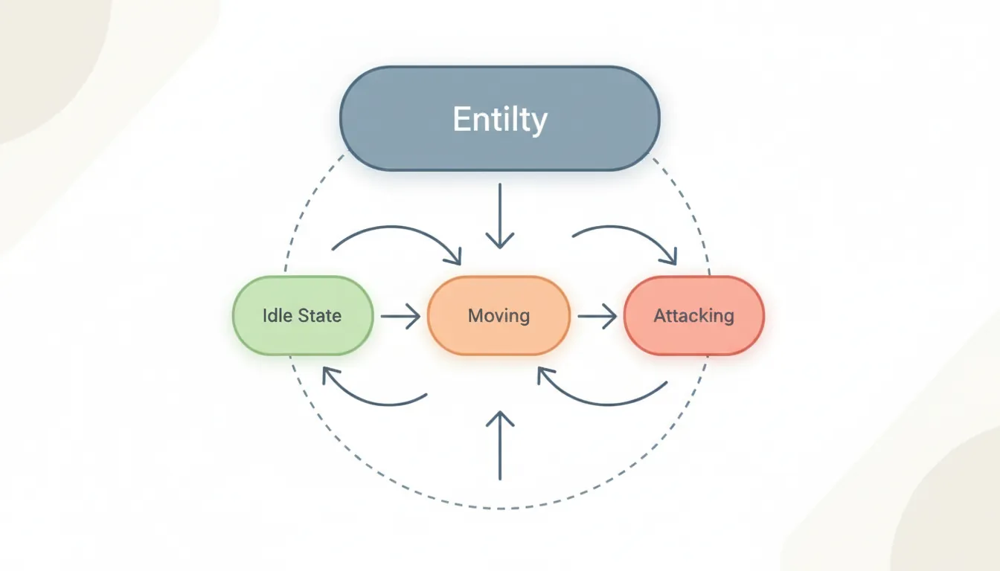
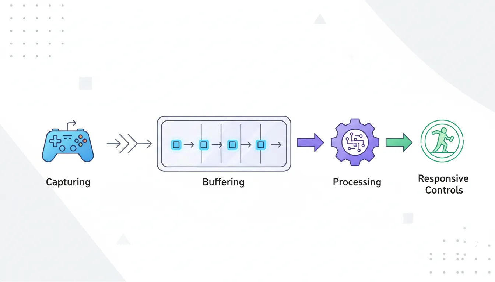

Game Development
Introduction to Game Development
Industry overview, roles, game design pipelineChoosing a Game Engine
Unity, Unreal, Godot, engine comparison, tradeoffsProgramming Basics for Games
Game loops, input handling, state machines, OOP2D Game Development
Sprites, tilemaps, platformers, 2D physics, animation3D Game Development
Meshes, materials, lighting, cameras, 3D mathPhysics & Collision Systems
Rigidbodies, colliders, raycasting, physics enginesAudio & Sound Design
Sound effects, music, spatial audio, audio middlewarePublishing Your Game
Store submission, marketing, monetization, launch strategyGame Design Fundamentals
Mechanics, dynamics, aesthetics, level design, balancingAI in Games
Pathfinding, behavior trees, state machines, NPC intelligenceMultiplayer & Networking
Client-server, peer-to-peer, netcode, synchronizationProfessional Game Dev Workflow
Version control, CI/CD, QA testing, agile for gamesBuilding a Portfolio
Showcasing projects, demo reels, job applications, indie devThe Game Loop
The game loop is the heartbeat of every video game. Unlike traditional programs that wait for user input, games must constantly update and render, creating the illusion of real-time interaction. Understanding the game loop is the most fundamental concept in game programming.

The Basic Game Loop
// The simplest game loop
while (gameIsRunning)
{
ProcessInput(); // 1. Check what the player did
Update(); // 2. Update game state (physics, AI, etc.)
Render(); // 3. Draw everything to screen
}Delta Time: The Key to Smooth Games
Delta time (dt or deltaTime) is the time elapsed since the last frame. This is crucial because games run at different speeds on different computers. Without delta time, your game would run faster on powerful computers and slower on weak ones.
// WITHOUT delta time (BAD - speed depends on framerate)
void Update()
{
position.x += 5; // Moves 5 pixels per FRAME
// At 60 FPS: 300 pixels/second
// At 30 FPS: 150 pixels/second (Half speed!)
}
// WITH delta time (GOOD - consistent speed)
void Update()
{
float speed = 300f; // 300 pixels per SECOND
position.x += speed * Time.deltaTime;
// At 60 FPS: 300 * 0.0167 = 5 pixels/frame
// At 30 FPS: 300 * 0.0333 = 10 pixels/frame
// Result: Same speed regardless of framerate!
}Frame Rate Impact Without Delta Time:
┌────────────────────────────────────────────────────────┐
│ 60 FPS Computer: ●────●────●────●────●────● │
│ 30 FPS Computer: ●─────────●─────────● │
│ └── Same time, half the distance! │
├────────────────────────────────────────────────────────┤
│ With Delta Time: Both computers = same distance/sec │
│ 60 FPS: Many small steps ●─●─●─●─●─●─●─● │
│ 30 FPS: Fewer big steps ●───●───●───● │
└────────────────────────────────────────────────────────┘Delta Time in Different Engines
| Engine | How to Access Delta Time | Example |
|---|---|---|
| Unity | Time.deltaTime |
transform.Translate(Vector3.forward * speed * Time.deltaTime); |
| Unreal | DeltaTime (passed to Tick) |
AddMovementInput(ForwardVector, Speed * DeltaTime); |
| Godot | delta (passed to _process) |
position += velocity * delta |
Frame-Based Updates
Fixed vs Variable Timestep
Games use two types of update loops, each with different purposes:

| Type | Description | Use For |
|---|---|---|
| Variable Timestep | Runs as fast as possible (Update/Tick) | Input, rendering, UI, animations |
| Fixed Timestep | Runs at fixed intervals (e.g., 50 times/sec) | Physics, deterministic gameplay, networking |
// Unity example: Two different update methods
void Update() // Variable timestep - runs every frame
{
// Good for: Input, camera, UI
if (Input.GetKeyDown(KeyCode.Space))
Jump();
// Use Time.deltaTime for movement
transform.position += direction * speed * Time.deltaTime;
}
void FixedUpdate() // Fixed timestep - runs at fixed intervals (default: 50/sec)
{
// Good for: Physics, consistent simulation
rb.AddForce(Vector3.forward * thrust);
// Time.fixedDeltaTime is always the same (0.02 by default)
}Interpolation: Smooth Visuals
When physics runs at 50 Hz but rendering runs at 144 Hz, you need interpolation to smooth out the visual movement:
// Without interpolation: Objects jump between physics positions
// With interpolation: Smooth movement between physics steps
void LateUpdate() // Runs after all updates
{
// Interpolate between previous and current physics positions
float t = (Time.time - Time.fixedTime) / Time.fixedDeltaTime;
transform.position = Vector3.Lerp(previousPosition, currentPosition, t);
}Essential Design Patterns
Design patterns are reusable solutions to common problems. These three patterns appear in almost every game:

State Pattern
The State Pattern manages different behaviors based on an entity's current state. Perfect for player characters, enemies, UI screens, and game phases.

// Bad approach: Giant if/else chains
void Update()
{
if (state == "idle") { /* idle code */ }
else if (state == "walking") { /* walk code */ }
else if (state == "jumping") { /* jump code */ }
else if (state == "attacking") { /* attack code */ }
// Gets messy fast!
}
// Good approach: State Pattern
public interface IPlayerState
{
void Enter(Player player);
void Update(Player player);
void Exit(Player player);
}
public class IdleState : IPlayerState
{
public void Enter(Player player)
{
player.animator.Play("Idle");
}
public void Update(Player player)
{
if (Input.GetAxis("Horizontal") != 0)
player.ChangeState(new WalkingState());
if (Input.GetButtonDown("Jump"))
player.ChangeState(new JumpingState());
}
public void Exit(Player player) { }
}
public class Player : MonoBehaviour
{
private IPlayerState currentState;
void Start() => ChangeState(new IdleState());
void Update() => currentState?.Update(this);
public void ChangeState(IPlayerState newState)
{
currentState?.Exit(this);
currentState = newState;
currentState.Enter(this);
}
}State Machine Diagram:
┌─────────┐ Move ┌─────────┐
│ IDLE │───────────►│ WALKING │
└─────────┘ └─────────┘
│ │
│ Jump │ Jump
▼ ▼
┌─────────┐ ┌─────────┐
│ JUMPING │◄───────────│ JUMPING │
└─────────┘ Land └─────────┘
│
│ Land
▼
┌─────────┐
│ IDLE │
└─────────┘Observer Pattern (Events)
The Observer Pattern allows objects to communicate without tight coupling. When something happens (player dies, coin collected), interested objects are automatically notified.
// Bad approach: Direct references everywhere
public class Player
{
public UIManager ui;
public SoundManager sound;
public AchievementSystem achievements;
void TakeDamage(int damage)
{
health -= damage;
ui.UpdateHealthBar(health); // Tight coupling!
sound.PlayHurtSound(); // Hard to maintain
achievements.CheckHealthAchievements(health);
}
}
// Good approach: Observer/Event Pattern
public class Player : MonoBehaviour
{
public static event Action<int> OnHealthChanged;
public static event Action OnPlayerDied;
void TakeDamage(int damage)
{
health -= damage;
OnHealthChanged?.Invoke(health); // Notify all listeners
if (health <= 0)
OnPlayerDied?.Invoke();
}
}
// Any system can listen without Player knowing about it
public class UIManager : MonoBehaviour
{
void OnEnable() => Player.OnHealthChanged += UpdateHealthBar;
void OnDisable() => Player.OnHealthChanged -= UpdateHealthBar;
void UpdateHealthBar(int health) => healthBar.value = health;
}
public class SoundManager : MonoBehaviour
{
void OnEnable() => Player.OnHealthChanged += PlayHurtSound;
void OnDisable() => Player.OnHealthChanged -= PlayHurtSound;
void PlayHurtSound(int health) => audioSource.PlayOneShot(hurtClip);
}Component Pattern
The Component Pattern builds game objects from small, reusable pieces. This is the foundation of Unity's architecture and modern game engines.
// Bad approach: Monolithic class
public class Enemy : MonoBehaviour
{
// Movement code
// Health code
// Attack code
// Sound code
// Animation code
// AI code
// 1000+ lines of spaghetti!
}
// Good approach: Component Pattern
// Each component does ONE thing well
public class Health : MonoBehaviour
{
public int maxHealth = 100;
public int currentHealth;
public event Action OnDeath;
public void TakeDamage(int damage)
{
currentHealth -= damage;
if (currentHealth <= 0) OnDeath?.Invoke();
}
}
public class Movement : MonoBehaviour
{
public float speed = 5f;
public void Move(Vector3 direction) =>
transform.Translate(direction * speed * Time.deltaTime);
}
public class Attacker : MonoBehaviour
{
public int damage = 10;
public float range = 2f;
public void Attack(Health target)
{
if (Vector3.Distance(transform.position, target.transform.position) < range)
target.TakeDamage(damage);
}
}
// Compose entities from components:
// Player = Health + Movement + Attacker + PlayerInput
// Enemy = Health + Movement + Attacker + AIController
// Turret = Health + Attacker (no movement!)Component Composition:
┌─────────────────────────────────────────────────────┐
│ PLAYER │
├─────────────────────────────────────────────────────┤
│ ┌─────────┐ ┌──────────┐ ┌──────────┐ ┌────────┐ │
│ │ Health │ │ Movement │ │ Attacker │ │ Input │ │
│ └─────────┘ └──────────┘ └──────────┘ └────────┘ │
└─────────────────────────────────────────────────────┘
┌─────────────────────────────────────────────────────┐
│ ENEMY │
├─────────────────────────────────────────────────────┤
│ ┌─────────┐ ┌──────────┐ ┌──────────┐ ┌────────┐ │
│ │ Health │ │ Movement │ │ Attacker │ │ AI │ │
│ └─────────┘ └──────────┘ └──────────┘ └────────┘ │
└─────────────────────────────────────────────────────┘
┌───────────────────────────────────────┐
│ TURRET │
├───────────────────────────────────────┤
│ ┌─────────┐ ┌──────────┐ ┌────────┐ │
│ │ Health │ │ Attacker │ │ Target │ │ (No movement!)
│ └─────────┘ └──────────┘ └────────┘ │
└───────────────────────────────────────┘Input Handling
Input Best Practices
Good input handling makes games feel responsive. Here are key principles:

// Unity Input Handling Best Practices
void Update()
{
// 1. Use GetButtonDown for one-time actions (jump, attack)
if (Input.GetButtonDown("Jump")) // True only on the frame pressed
Jump();
// 2. Use GetButton for continuous actions (hold to run)
if (Input.GetButton("Sprint")) // True every frame while held
speed = sprintSpeed;
// 3. Use GetAxis for analog/gradual input
float horizontal = Input.GetAxis("Horizontal"); // -1 to 1, smoothed
float vertical = Input.GetAxis("Vertical");
// 4. Use GetAxisRaw for instant response (no smoothing)
float rawHorizontal = Input.GetAxisRaw("Horizontal"); // -1, 0, or 1 only
}
// Input buffering for responsive controls
public class InputBuffer
{
private float jumpBufferTime = 0.1f; // 100ms buffer
private float lastJumpPress = -1f;
void Update()
{
if (Input.GetButtonDown("Jump"))
lastJumpPress = Time.time;
// Player can press jump slightly before landing
if (Time.time - lastJumpPress < jumpBufferTime && IsGrounded())
{
Jump();
lastJumpPress = -1f; // Consume the input
}
}
}Input in Different Engines
| Action | Unity | Godot (GDScript) |
|---|---|---|
| Key Pressed | Input.GetKeyDown(KeyCode.Space) |
Input.is_action_just_pressed("jump") |
| Key Held | Input.GetKey(KeyCode.Space) |
Input.is_action_pressed("jump") |
| Key Released | Input.GetKeyUp(KeyCode.Space) |
Input.is_action_just_released("jump") |
| Analog Axis | Input.GetAxis("Horizontal") |
Input.get_axis("left", "right") |
| Mouse Position | Input.mousePosition |
get_global_mouse_position() |
Coyote Time: Forgiving Platformer Mechanics
Coyote time is a brief window after leaving a platform where the player can still jump. This makes platformers feel more fair and responsive.
public class PlatformerController : MonoBehaviour
{
private float coyoteTime = 0.15f; // 150ms grace period
private float coyoteCounter;
private float jumpBufferTime = 0.1f; // 100ms input buffer
private float jumpBufferCounter;
void Update()
{
// Track time since last grounded
if (IsGrounded())
coyoteCounter = coyoteTime;
else
coyoteCounter -= Time.deltaTime;
// Track time since jump pressed
if (Input.GetButtonDown("Jump"))
jumpBufferCounter = jumpBufferTime;
else
jumpBufferCounter -= Time.deltaTime;
// Jump if within EITHER grace period
if (coyoteCounter > 0 && jumpBufferCounter > 0)
{
Jump();
coyoteCounter = 0; // Consume coyote time
jumpBufferCounter = 0; // Consume buffer
}
}
}Exercise: Build a State Machine
Goal: Implement a simple character state machine with these states:
- Idle: Standing still, play idle animation
- Walking: Moving left/right, play walk animation
- Jumping: In the air, play jump animation
Requirements:
- Each state has Enter(), Update(), Exit() methods
- Transitions: Idle ↔ Walking (on input), Any → Jumping (on jump key)
- Use delta time for movement
- Implement coyote time for the jump
Bonus: Add a "Falling" state that's different from "Jumping"